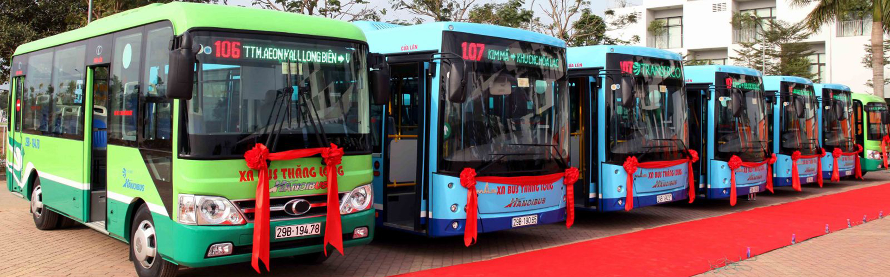

Tra cứu thông tin lộ trình xe buýt Hà Nội
Chào mừng quý khách đến với trang web tra cứu thông tin lộ trình xe buýt Hà Nội!
Mời quý khách lựa chọn tuyến buýt ở bên trái để tra cứu thông tin về lộ trình, thời gian hoạt động, tần suất chạy xe, giá vé và danh sách điểm dừng đỗ trên tuyến.
